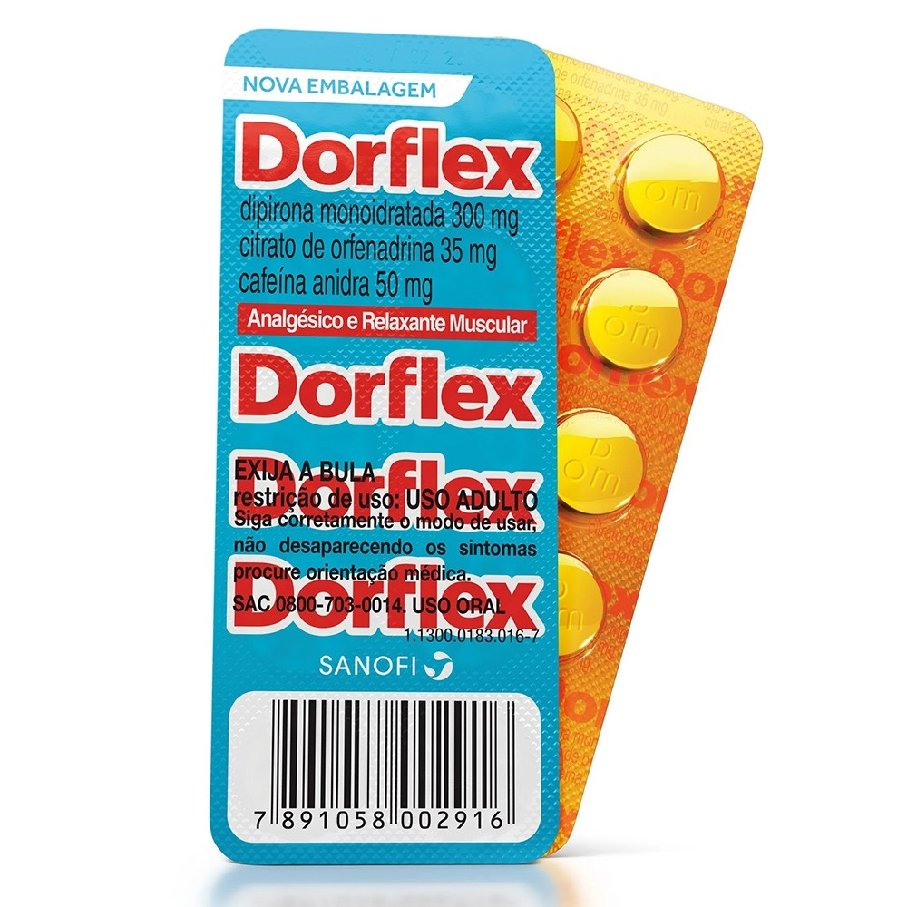
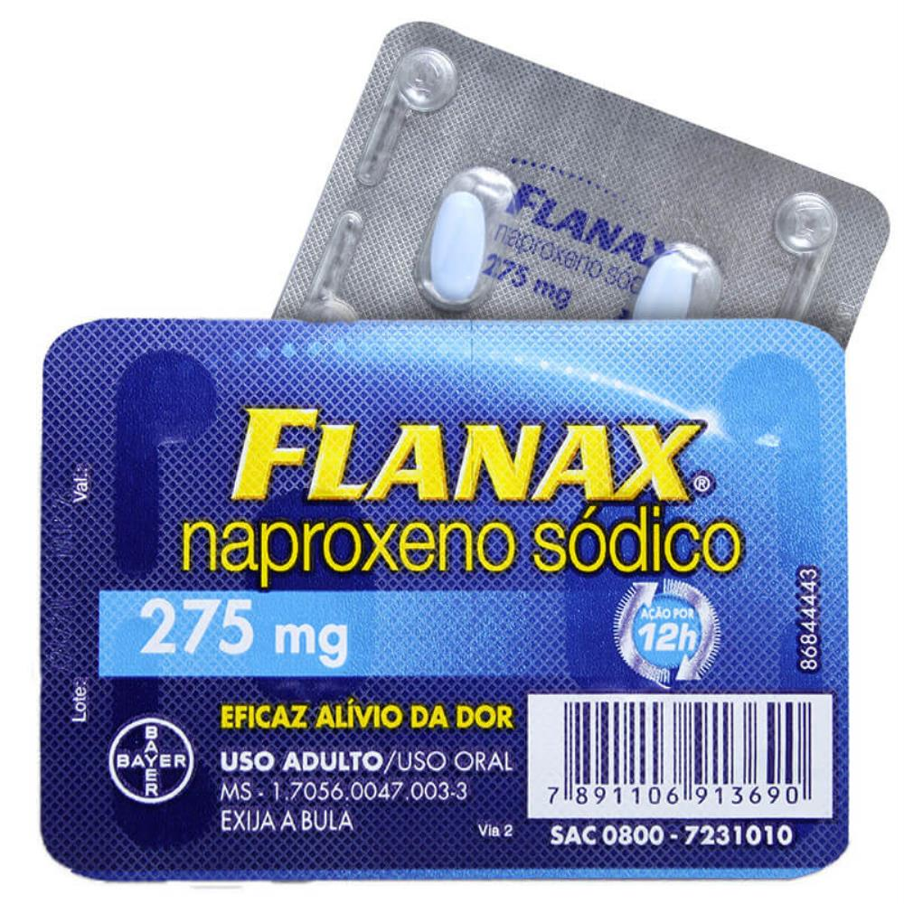

Dorflex
Dorflex é indicado no alívio da dor associada a contraturas musculares, incluindo dor de cabeça tensional.
Composição: 300 mg de dipirona monoidratada, 35 mg de citrato de orfenadrina (equivalente a 20,4 mg de orfenadrina base) e 50 mg de cafeína anidra.
Como funciona: Dorflex possui ação analgésica e relaxante muscular. O início da ação ocorre a partir de 30 minutos.

Remédio 2
Descrição do Remédio 2
Composição: Ingredientes do Remédio 2
Recomendação: Recomendação para o Remédio 2